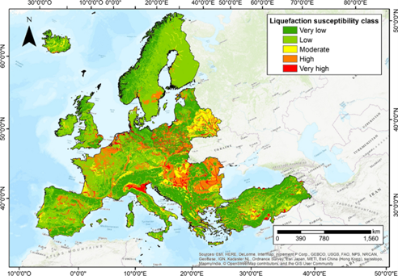
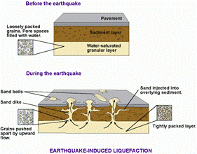

Table of conents |
|---|
| Abstract |
| Introduction |
| Analysis and discussion |
| Conclusion |
| References |
Soil liquefaction occurs during earthquakes when the shaking causes soil to lose its strength, leading to damage to structures built on top. In this article, we will explore its causes, effects, prevention, and mitigation, emphasizing the importance of understanding it for safe and resilient infrastructure in earthquake-prone areas.
From the most basic structure to the most advanced structure ever constructed needs appropriate knowledge of the geo-engineering features of the soil masses where it is to be constructed. Soil liquefaction occurs when there is movement between the tectonic plates, causing the soul to lose its strength, from which it acts like a liquid and has liquid properties. Water fills all spaces left between individual particles when soil is saturated, as stated by Dr Stavroula Kontoe of Imperial College London. The water pressure between soil particles is increased by seismic shaking; this can cause the particles to lose contact with one another, ultimately resulting in soil stiffness and strength loss. This is a simple definition of what soil liquefaction is.
Most earthquakes occur near the Pacific Ocean in the Ring of Fire. The 1964 Niigata earthquake caused widespread liquefaction in Japan, destroying many buildings. The Niigata earthquake kickstarted geotechnical research and methods to prevent it. The event was infamous even though it was one of the first earthquakes that had caused damage to so many buildings. The Canterbury-Christchurch sequence liquefication affected 60,000 residential buildings and infrastructure of more than one-third of the city. The impacts of the liquefication totaled approximately €23 billion. Ground liquefaction caused damage to about 27,000 buildings and many ports in Japan during the 2011 Tohoku earthquake. Twelve thousand buildings were seriously damaged during the Emilia series, and heavy damage to structures was frequently associated with ground failure and soil liquefaction. Also, during the 1989 Loma Prieta, California earthquake, liquefaction of the soils and debris used to fill in a lagoon caused major subsidence, fracturing, and horizontal sliding of the ground surface in the Marina district in San Francisco. What causes earthquake-induced soil liquefaction? Many factors contribute to why it happens, such as seismic shaking, water content, and soil type. Seismic Shaking: Earthquakes generate seismic waves that travel through the Earth's crust. These waves cause the ground to vibrate, leading to a back-and-forth motion of the soil particles. The shaking can disrupt the contact between soil particles and displace water within the soil, leading to the loss of soil strength. The earthquake's magnitude is relevant as the higher the magnitude, the more likely it is to induce liquefaction. Higher magnitude earthquakes have longer durations of ground shaking, creating stress and strain in the soil. The longer the ground shaking lasts, the more time the water pressure has to build up and overcome the soil strength.
Process of soil liquefaction Initial Compaction: Initially, the soil is dense and provides structural support. Even with static loading conditions, the excess pore water pressure can accumulate if water-saturated. Seismic Loading: Soil particles lose contact with each other due to the earthquake. Dynamic loading is induced on the Earth by the seismic waves. Excess Pore Water Pressure: The soil's pore water pressure rises because of the seismic shaking. The soil may temporarily lose strength because of this pressure increasing to a point where it exceeds the effective stress. Temporary Transformation: The soil behaves like a liquid when the extra pore water pressure exceeds the effective stress, and the soil particles float. As a result, the soil quickly and temporarily changes into a fluid state.
How are engineers tackling the problem? Engineers and geologists employ various strategies to mitigate the risks associated with soil liquefaction: 1. Improved Foundations: Designing foundations with features such as deep piles or mats that extend to more stable soil layers helps reduce the risk of settlement and tilting. 2. Ground Improvement Techniques: Techniques like compaction grouting and vibro compaction are employed to densify and strengthen the soil, making it more resistant to liquefaction. 3. Seismic Retrofitting: Existing structures in earthquake-prone areas can be retrofitted to enhance their resilience against liquefaction-induced damage. 4. Zoning and Land Use Planning: Governments and local authorities implement zoning regulations to limit construction in high-risk liquefaction areas, ensuring safer urban development.
Geotechnical solutions for soil liquefaction Ground improvement techniques reduce the possibility of soil liquefication, including Compaction, dynamic Compaction, and vibro-compaction. Compaction increases the density of soil, hence lowering the chances for liquefication. Dynamic Compaction is when heavy machinery increases density and stabilizes soil. Vibro-compaction is when vibrations are to increase the density of soil. Soil improvement methods include grouting, chemical stabilization, and electrokinetic stabilization. Grouting is when the grout is injected into the soil. This increases the strength of the soil. Chemical stabilization is when certain chemicals are mixed with soil to increase the strength. Electrokinetic stabilization is when electricity is applied to the soil, increasing the stability. Liquification-resilient designs are considered when making designs for infrastructures.
 Figure 1 shows the likelihood of liquefaction in Europe. There is a very high possibility of liquefaction in the areas near the river Po in Italy. Figure 2 shows how an earthquake has affected the pavement.
In conclusion, soil liquefaction is a captivating yet challenging aspect of the geotechnical sector. As our understanding of this area grows, so do our strategies for developing resilient infrastructure and protecting communities from the Earth's unpredictable forces.
Geosciences.Available at: https://www.mdpi.com/journal/geosciences/special_issues/soil_liquefaction_hazard (Accessed: 2 December 2023).
How Does Earthquake Magnitude Impact Liquefaction?Available at: www.linkedin.com/advice/0/how-does-earthquake-magnitude-impact-liquefaction-4zqbe (Accessed: 2 December 2023).
Liquefaction during the 1964 Niigata Earthquake.Available at: https://www.geoengineer.org/education/web-class-projects/ce-179-geosystems-engineering-design/assignments/liquefaction-1964-niigata-earthquake (Accessed: 2 December 2023).
Indonesia Earthquake: Soil Liquefaction Blamed for Building Collapses.Available at: (Accessed: 2 December 2023).
Mapping Soil Liquefaction Susceptibility across Europe Using the Analytic Hierarchy Process.Available at: https://doi.org/10.1007/s10518-022-01442-8. (Accessed: 2 December 2023).
What is liquification.Available at https://www.usgs.gov/faqs/what-liquefaction (Accessed: 2 December 2023).